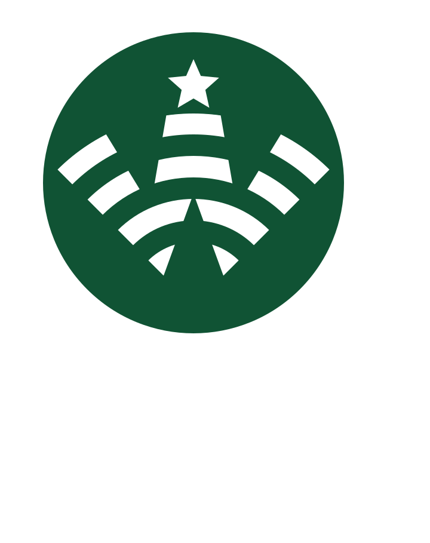
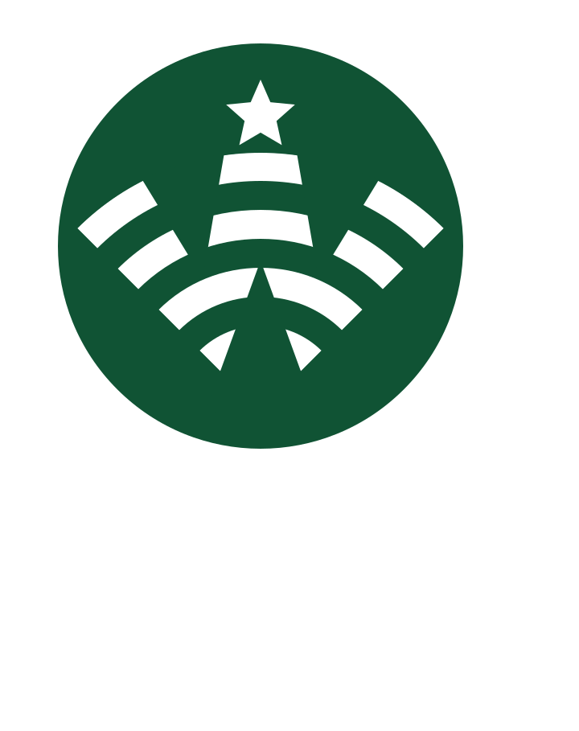

스타웍스

다운로드
다운로드사용법
- 다운로드한
.dmg파일을 열면스타웍스앱이 보입니다. 스타웍스앱을 응용프로그램 폴더로 옮깁니다.
최초 연결
스타웍스앱을 실행한 상태에서 스타벅스에서KT_starbucks네트워크에 연결되면- 평소 스타벅스의 연결 절차가 진행되며,
자동 연결
- 정상 연결 될 때의 정보가 기억됩니다.

.dmg 파일을 열면 스타웍스앱이 보입니다.스타웍스앱을 응용프로그램 폴더로 옮깁니다.스타웍스 앱을 실행한 상태에서 스타벅스에서 KT_starbucks 네트워크에 연결되면